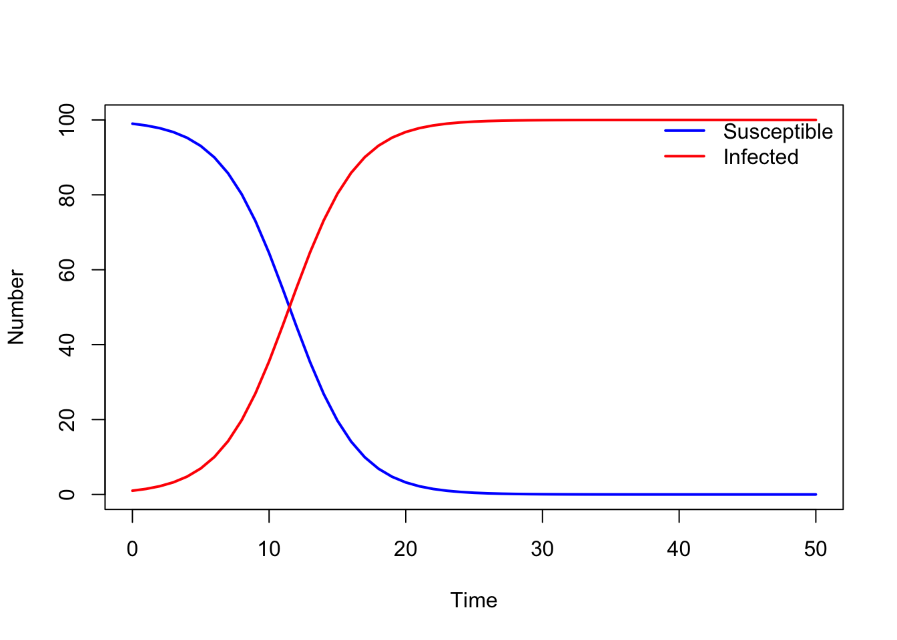
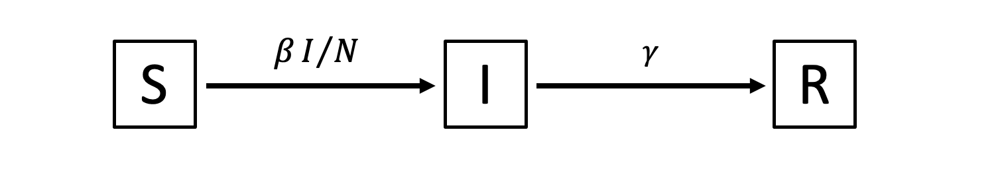
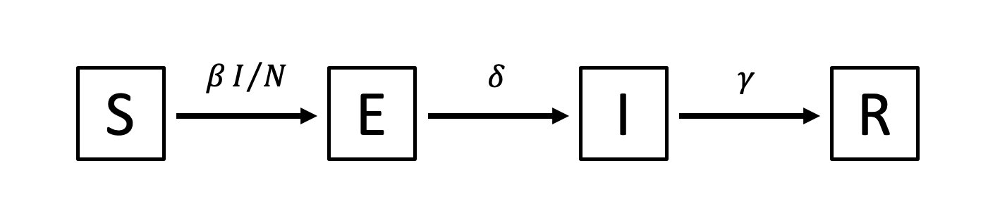

Warning: package 'deSolve' was built under R version 4.5.2
In this practical, we will use the R package deSolve to solve ODE models of infectious disease transmission.
deSolveWe will begin by exploring how to use deSolve to solve SI, SIR, and SEIR models.
We’ll start by implementing the Susceptible-Infectious (SI) model from the lecture slides as a series of ordinary differential equations, and solve this model using deSolve. The model has the following diagram:
Here, the force of infection is \(\beta I/N\) (\(\beta\) = beta), and once infected, individuals can infect others for life.
See if you can code up an SI model using the material from the lecture slides. Use \(\beta = 0.4\) as the transmission rate, and solve the model over 0 to 50 days with initial conditions \(S(0) = 99, I(0) = 1\). Then plot the output to visualise your results.
The material from the lecture slides on the ODE SI model is summarized here: ODE SI code.
Your model’s output should look something like this:
Warning: package 'deSolve' was built under R version 4.5.2
by argument in the times vector represent?by argument. What happens to the output? HINT: plot using type = "b" to plot both lines and points.Now, let’s create a Susceptible-Infectious-Recovered (SIR) model. Start by creating a new R script and copying and pasting in your code for the SI model; we will edit this code to create the SIR model. (You can also start from the provided ODE SI code here.)
The SIR model has the following diagram:

Here, the force of infection is \(\beta I/N\) and the recovery rate is \(\gamma\) (gamma).
As before, use \(\beta = 0.4\) as the transmission rate, and set \(\gamma\) such that the average duration of the infectious period is 5 days. Assume a total population of 100 individuals, one infectious person at time 0, and no recovered people at the start of the outbreak. Solve the model over 100 days.
Working from your SI model, you will need to: change the name of your model function; add the new parameter \(\gamma\) to the model function and the parms vector; add the new state compartment \(R\) to the model function and the y vector; and make sure you are using the correct initial conditions, parameter values, and times.
Now, working from your SIR model, let’s create a Susceptible-Exposed-Infectious-Recovered (SEIR) model with the following diagram:

In this model, once infected, susceptible individuals move to the exposed class. Assume that exposed individuals become infectious after five days.
We will assume that susceptible individuals are vaccinated at a rate \(v = 0.01\). The vaccine is 100% effective, so once vaccinated, individuals cannot become infected. HINT: you will need to create a new class \(V\), and you can assume that the initial number of vaccinated individuals is 0.
deSolveIn this practical, we’ll be exploring some more advanced uses of the deSolve package.
Copy and paste the following R Script into RStudio and follow along with the instructions in the comments:
######################################################
# ODEs in R: Practical 2 #
######################################################
# Load in the deSolve package
library(deSolve)
# If the package is not installed, install using the install.packages() function
########## PART I. TIME DEPENDENT TRANSMISSION RATE
# The code below is for an SI model with a time dependent transmission rate.
# The transmission rate is a function of the maximum value of beta (beta_max)
# and the period of the cycle in days.
# Define model function
SI_seasonal_model <- function(t, state, parms)
{
# Get variables
S <- state["S"]
I <- state["I"]
N <- S + I
# Get parameters
beta_max <- parms["beta_max"]
period <- parms["period"]
# Calculate time-dependent transmission rate
beta <- beta_max / 2 * (1 + sin(2*pi*t / period))
# Define differential equations
dS <- -(beta * S * I) / N
dI <- (beta * S * I) / N
res <- list(c(dS, dI))
return (res)
}
# Define parameter values
parameters <- c(beta_max = 0.4, period = 10)
# Define time to solve equations
times <- seq(from = 0, to = 50, by = 1)
# 1. Plot the equation of beta against a vector of times to understand the time
# dependent pattern.
# How many days does it take to complete a full cycle?
# How does this relate to the period?
##### YOUR CODE GOES HERE #####
# 2. Now solve the model using the function ode and plot the output
# HINT: you need to write the state vector and use the ode function
# using func = SI_seasonal_model
##### YOUR CODE GOES HERE #####
# 3. Change the period to 50 days and plot the output. What does the model output look like?
# Can you explain why?
########## PART II. USING EVENTS IN DESOLVE
## deSolve can also be used to include 'events'. 'events' are triggered by
# some specified change in the system.
# For example, assume an SI model with births represents infection in a livestock popuation.
# If more than half of the target herd size becomes infected, the infected animals are culled
# at a daily rate of 0.5.
# As we are using an open population model (i.e. a model with births and/or deaths),
# we have two additional parameters governing births: the birth rate b, and the
# target herd size (or carrying capacity), K
# Define model function
SI_open_model <- function(times, state, parms)
{
## Define variables
S <- state["S"]
I <- state["I"]
N <- S + I
# Extract parameters
beta <- parms["beta"]
K <- parms["K"]
b <- parms["b"]
# Define differential equations
dS <- b * N * (K - N) / K - (beta * S * I) / N
dI <- (beta * S * I) / N
res <- list(c(dS, dI))
return (res)
}
# Define time to solve equations
times <- seq(from = 0, to = 100, by = 1)
# Define initial conditions
N <- 100
I_0 <- 1
S_0 <- N - I_0
state <- c(S = S_0, I = I_0)
# 4. Using beta = 0 (no infection risk), K = 100, b = 0.1, and an entirely susceptible
# population (I_0 = 0), investigate how the population grows with S_0 = 1, 50 and 100.
# What size does the population grow to? Why is this?
# Answer:
# How do you increase this threshold?
# Answer:
# Define parameter values
# K is our target herd size, b is the birth rate)
parameters <- c(beta = 0, K = 100, b = 0.1)
# To include an event we need to specify two functions:
# the root function, and the event function.
# The root function is used to trigger the event
root <- function(times, state, parms)
{
# Get variables
S <- state["S"]
I <- state["I"]
N <- S + I
# Get parameters
K <- parms["K"]
# Our condition: more than half of the target herd size becomes infected
# We want our indicator to cross zero when this happens
indicator <- I - K * 0.5
return (indicator)
}
# The event function describes what happens if the event is triggered
event_I_cull <- function(times, state, parms)
{
# Get variables
I <- state["I"]
# Extract parameters
tau <- parms["tau"]
I <- I * (1 - tau) # Cull the infected population
state["I"] <- I # Record new value of I
return (state)
}
# We add the culling rate tau to our parameter vector
parameters <- c(beta = 0.1, K = 100, tau = 0.5, b = 0.1)
# Solve equations
output_raw <- ode(y = state, times = times, func = SI_open_model, parms = parameters,
events = list(func = event_I_cull, root = TRUE), rootfun = root)
# Convert to data frame for easy extraction of columns
output <- as.data.frame(output_raw)
# Plot output
par(mfrow = c(1, 1))
plot(output$time, output$S, type = "l", col = "blue", lwd = 2, ylim = c(0, N),
xlab = "Time", ylab = "Number")
lines(output$time, output$I, lwd = 2, col = "red")
legend("topright", legend = c("Susceptible", "Infected"),
lty = 1, col = c("blue", "red"), lwd = 2, bty = "n")
# 5. What happens to the infection dynamics when the infected animals are culled?
# Answer:
# 6. Assume now that when an infected herd is culled, the same proportion of
# animals is ADDED to the susceptible population.
# HINT: You will need to change the event function to include additions to the
# S state.
##### YOUR CODE GOES HERE #####
# 7. What happens to the infection dynamics when the infected animals are culled?
# How is this different to when only infected animals are culled?
# Answer:
########## PART III. USING RCPP
## Here we will code our differential equations using Rcpp to compare the speed
# of solving the model.
library(Rcpp)
## The SIR Rcpp version can be compiled as follows:
cppFunction(
'List SIR_cpp_model(NumericVector t, NumericVector state, NumericVector parms)
{
// Get variables
double S = state["S"];
double I = state["I"];
double R = state["R"];
double N = S + I + R;
// Get parameters
double beta = parms["beta"];
double gamma = parms["gamma"];
// Define differential equations
double dS = -(beta * S * I) / N;
double dI = (beta * S * I) / N - gamma * I;
double dR = gamma * I;
NumericVector res_vec = NumericVector::create(dS, dI, dR);
List res = List::create(res_vec);
return res;
}
')
# Let's also implement the same model in R for comparison:
SIR_R_model <- function(t, state, parms)
{
# Get variables
S <- state["S"]
I <- state["I"]
R <- state["R"]
N <- S + I + R
# Get parameters
beta <- parms["beta"]
gamma <- parms["gamma"]
# Define differential equations
dS <- -(beta * S * I) / N
dI <- (beta * S * I) / N - gamma * I
dR <- gamma * I
res <- list(c(dS, dI, dR))
return (res)
}
# This can be solved in R using deSolve as follows
# Define time to solve equations
times <- seq(from = 0, to = 100, by = 1)
# Define parameter values
parameters <- c(beta = 0.4, gamma = 0.1)
# Define initial conditions
N <- 100
I_0 <- 1
S_0 <- N - I_0
R_0 <- 0
state <- c(S = S_0, I = I_0, R = R_0)
# Solve equations
output_raw <- ode(y = state, times = times, func = SIR_cpp_model, parms = parameters)
# Convert to data frame for easy extraction of columns
output <- as.data.frame(output_raw)
# plot results
par(mfrow = c(1, 1))
plot(output$time, output$S, type = "l", col = "blue", lwd = 2, ylim = c(0, N),
xlab = "Time", ylab = "Number")
lines(output$time, output$I, lwd = 2, col = "red")
lines(output$time, output$R, lwd = 2, col = "green")
legend( "topright", legend = c("Susceptible", "Infected", "Recovered"),
bg = rgb(1, 1, 1), lty = rep(1, 2), col = c("blue", "red", "green"), lwd = 2, bty = "n")Solutions to this practical can be accessed here.